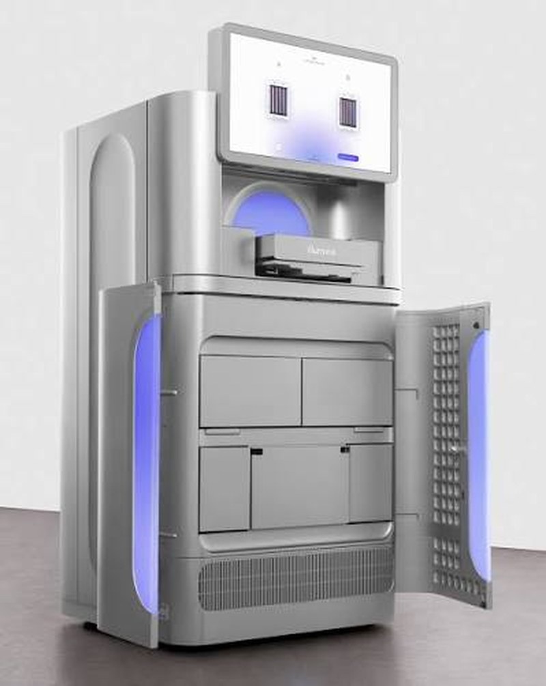

La pregunta llega casi todos los días a nuestros hubs de Madrid y Santiago: «¿cuánto cuesta secuenciar mis muestras?»
Es una pregunta razonable con una respuesta incómoda: el precio por muestra es, muchas veces, la parte menos determinante del costo total de tu proyecto.
Un genoma humano cuesta hoy alrededor de 500 USD en centros de producción de alto volumen — frente a los 95 millones de dólares de 2001, según el seguimiento histórico del NHGRI. Pero esa cifra describe una realidad de producción industrial que rara vez coincide con la de un laboratorio académico en Chile, Perú o España.
1. Por qué el «precio por muestra» es una métrica engañosa
Comparar proveedores por su precio por reacción o por Gb es como comparar vuelos solo por la tarifa base: técnicamente correcto, prácticamente inútil.
Un proveedor puede ofrecer el mejor precio por Gb y aun así resultar el más caro del proyecto si cobra aparte la preparación de librerías, el análisis bioinformático y la repetición de muestras fallidas.
2. Sanger: economía de precisión, no de escala
La secuenciación Sanger (CES) sigue viva por una razón económica muy concreta: su costo escala con el número de objetivos, no con el volumen de datos. Cada reacción lee un fragmento específico — no pagas por capacidad que no usas.
En 2026, la secuenciación Sanger externalizada se sitúa entre 5 y 20 USD por reacción en los principales proveedores internacionales.
Cuándo Sanger gana en costo
- Verificación de clones — 1 a 10 construcciones
- Confirmación de variantes puntuales detectadas por NGS
- Identificación microbiana por 16S/ITS de aislados individuales
- Genotipado dirigido de pocos loci conocidos
La regla práctica: por debajo de aproximadamente 10–50 objetivos, Sanger casi siempre resulta más económico. Por encima de ese rango, la economía se invierte con rapidez.
Las tres palancas de costo en Sanger
En nuestro servicio de Standard Sequencing, tres decisiones mueven el presupuesto de forma significativa:
| Palanca | Impacto en el presupuesto |
|---|---|
| Formato tubo vs. placa 96 | El costo por reacción cae drásticamente en placa |
| Modalidad Premix | Enviar template y primer premezclados reduce la tarifa |
| Primers universales | Si tu primer está entre los 96 de stock, no pagas síntesis |
Este último punto es una fuente habitual de sobrecosto perfectamente evitable: muchos investigadores encargan primers M13, T7 o 27F que ya están disponibles sin cargo.
3. NGS: dónde se esconde realmente el dinero

Illumina NovaSeq X Plus
La caída del costo por Gb en la última década se explica en buena parte por plataformas de esta escala. Pero ese ahorro solo se materializa si la corrida se llena — por eso el multiplexado y el tamaño del lote pesan tanto en tu cotización.
| Química | 150PE estándar |
|---|---|
| Modalidad | Lane o FlowCell completa |
| TAT Ready to Run | 3–4 semanas |
En NGS, el precio del instrumento y la química es la parte que más ha bajado y la que menos deberías optimizar. Lo que domina tu factura es otra cosa.
La preparación de librerías
Es, en muchos proyectos, el rubro individual más caro. Y es exactamente donde existe una palanca que pocos aprovechan: si tu laboratorio ya construye librerías, no pagues por que las construyan de nuevo.
La modalidad Ready to Run permite enviar librerías ya construidas directamente a secuenciación, saltándose el paso de construcción — con TAT acortado de 3 a 4 semanas en NovaSeq X. Puedes explorarla en nuestro cotizador NGS.
La cobertura: el multiplicador silencioso
Pasar de 30x a 60x duplica el costo de secuenciación. No es una mejora marginal de calidad: es el doble de presupuesto.
La pregunta correcta no es «¿cuánta cobertura puedo permitirme?» sino «¿cuánta cobertura exige mi pregunta científica?». Para variantes germinales, 30x es estándar. Para variantes somáticas de baja frecuencia alélica, 100x o más puede ser obligatorio. Lo desarrollamos en detalle en nuestra guía de cobertura.
La bioinformática
Un error frecuente de presupuestación: cotizar la secuenciación y descubrir después que el análisis va aparte. En proyectos con análisis complejo, la bioinformática puede representar entre el 30% y el 40% del costo total.
El costo del re-trabajo
Una muestra que falla el control de calidad y debe repetirse cuesta el doble — más el retraso. Por eso los requisitos de concentración y pureza no son burocracia: son control de costos.
4. El factor que nadie cotiza: la logística
Para laboratorios en Iberoamérica, este rubro puede decidir el proyecto completo. Un precio por muestra excelente desde un proveedor sin presencia local puede evaporarse ante:
- Envío internacional de muestras congeladas
- Retenciones aduaneras que comprometen la integridad de la muestra
- Facturación en divisa extranjera sin factura local
- Soporte en zona horaria incompatible cuando algo falla
Nuestra estructura de dos hubs — Madrid para España y Portugal, Santiago para Chile y Perú — existe precisamente para eliminar estas fricciones: recogida local gratuita, facturación local y soporte en tu horario.
5. Cómo presupuestar bien: cuatro preguntas
Antes de comparar cotizaciones, responde esto:
- ¿Cuántos objetivos necesito interrogar? Menos de ~50 → evalúa Sanger primero.
- ¿Qué frecuencia alélica debo detectar? Esto determina la cobertura, y la cobertura determina el costo.
- ¿Qué incluye exactamente la cotización? Exige el desglose: librerías, secuenciación, análisis y envío.
- ¿Cuál es el costo de un mes de retraso? A veces el proveedor más barato es el más caro.
6. Transparencia como estándar
Publicamos nuestras tarifas de Sanger directamente en el sitio — por reacción, por placa y por servicio adicional — porque creemos que un investigador debe poder presupuestar sin esperar tres días por un correo.
Para proyectos NGS, donde el precio depende genuinamente del diseño experimental, ofrecemos cotización detallada con desglose completo.
Si aún no tienes claro qué tecnología necesitas antes de hablar de precio, nuestra guía complementaria sobre cuándo elegir Sanger o NGS aborda esa decisión desde la pregunta científica.
10% OFF en tu primer pedido Sanger
Usa el código SANGER10 en tu cotización web hasta el 31 de agosto de 2026.
Conversemos sobre tu proyecto
Si estás diseñando un proyecto y quieres entender el costo real antes de comprometer presupuesto, nuestro equipo técnico puede ayudarte a dimensionarlo correctamente — incluso si la conclusión es que necesitas menos de lo que pensabas.
- Explora el catálogo completo de servicios Sanger — Standard Sequencing, Fragment Analysis, Identificación y Customized Sequencing
- Revisa las tarifas publicadas de secuenciación Sanger
- Solicita una cotización con desglose completo, sin compromiso
🇪🇸 Madrid · +34 911 138 378 — atiende España y Portugal · info-spain@macrogen.com
🇨🇱 Santiago · +56 9 5845 1395 — atiende Chile y Perú · info-chile@macrogen.com
Fuentes de referencia: NHGRI — The Cost of Sequencing a Human Genome y DNA Sequencing Costs: Data. Las tarifas de terceros citadas son rangos de mercado observados en 2026 y no constituyen una oferta.